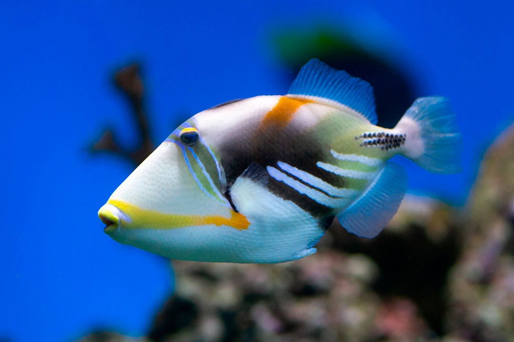
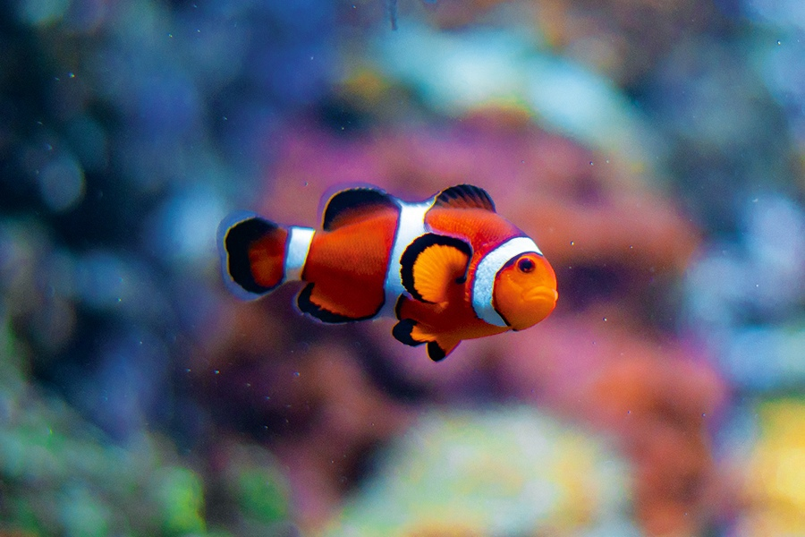
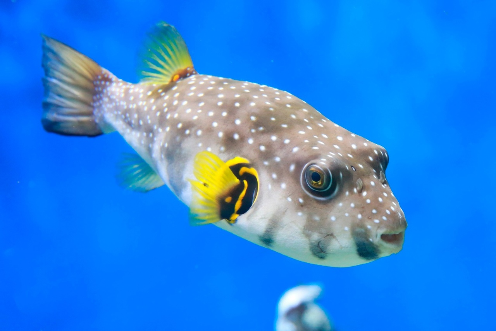
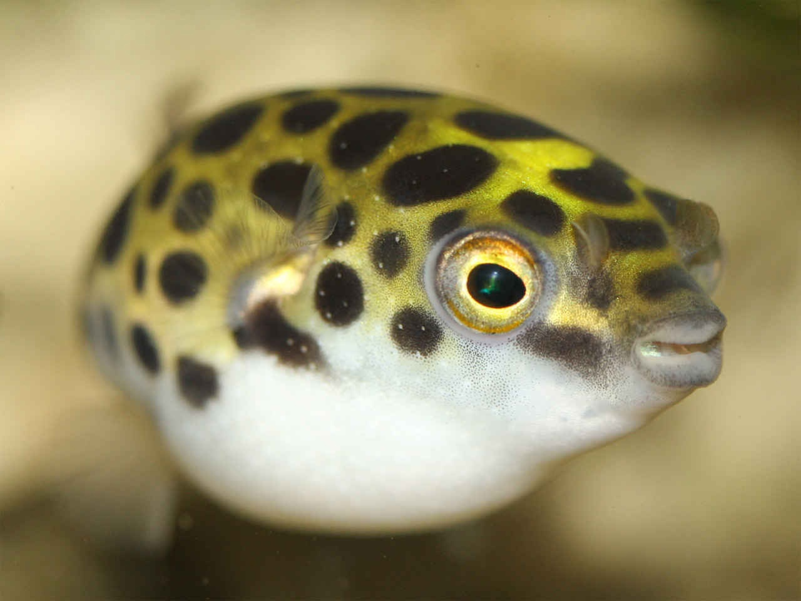
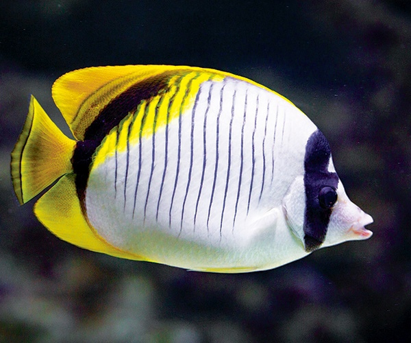

Каталог
 Кубик-кузовок
Кубик-кузовок
Кузовок-кубик — вид морских лучепёрых рыб из семейства кузовковых отряда иглобрюхообразных. Распространена в водах Тихого и Индийского океанов в районах рифов, а также в Атлантическом океане у юго-западного побережья Африки.

Спинорог
Спинороги – довольно крупные рыбы – от 20 сантиметров до 1 метра в длину. Кожа покрыта крупной чешуей. На конце заострённой морды располагается небольшой рот, вооружённый очень крепкими зубами. Его представители распространены в тропических и субтропических водах Атлантического, Индийского и Тихого океанов.

Рыба-клоун
Благодаря мультфильму «В поисках Немо» рыбы клоуны обрели всемирную известность. Для биологов интерес представляет симбиоз рыбы клоуна и актинии. Клоуны выделяют на поверхности кожи вещества, которые обманывают актинию, любую другую рыбку актиния сразу же проглотит, поймав в свои щупальца.

Аротрон
Аротроны – крайне необычные рыбы, обладающие множеством особенностей, не укладывающихся в привычный для нас образ рыб. Их громоздкое туловище напоминает дирижабль, а кожа их лишена чешуи и нежная на ощупь.
 Дискус
Дискус
Дискусы широко распространены в бассейне реки Амазонки, а также являются популярными аквариумными рыбами.

Тетрадон
Иглобрюхи, или тетрадоны (Tetraodon) – род лучеперых рыб из семейства Иглобрюховые (или Четырехзубые). В настоящее время включает в себя более 100 видов морских и солоноватоводных рыб.

Рыба-бабочка
Рыбы-бабочки – одно из самых ярких и красивых семейств морских рыб, включающее 10 родов и до 130 видов. Обитают в прибрежной зоне, населяя в основном коралловые рифы.